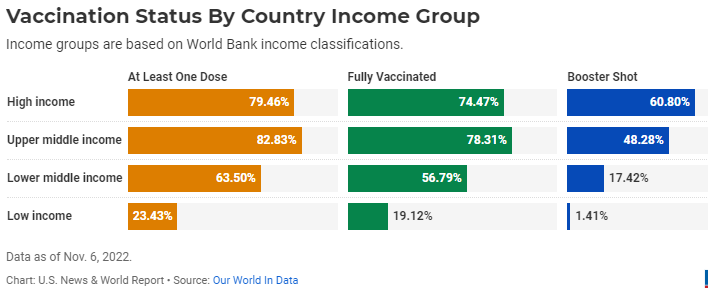

import pandas as pdimport numpy as npimport requestsfrom pandas import Series, DataFrameimport matplotlib.pyplot as pltfrom matplotlib import rcParamsimport statsmodels.api as smimport matplotlib.pyplot as pltimport seaborn as snsimport plotly.express as pximport plotly.graph_objs as goplt.rc('font', size=10) %matplotlib inline
1 Analysis Plan
Firstly we perform data retrieval (identifying data sources, defining important variables and relevant key performance indicators). Secondly, we will perform data processing which includes data transformation, data translation, checking consistency of data, data pre-processing, checking outliers and handling of missing values. Thirdly, we will perform Exploratory Data Analysis, make statistical summaries, and then data visualization of graphs. Then we will perform a hypothesis testing of vaccination vs total deaths.
We look at a sample to inspect the data. This steps gives us an early insight into the data that will be used in order to carry out the analysis.
Feature selection is one the vital task to perform data analysis and exploration There are various statistical methods included in feature selection. In this project our motive is to focus on the vsccinstion rates and the total death. Hence, we select features which are closely related to this component. The OWID dataset has 65 variables. All the variables are not required for our analysis. We select only few variables here.
Since vaccine_df is updated on a daily basis and an aggregation of all the dates (one single value for each country) is needed for better visualization.
Applying aggregation function on total_vaccination column in Vaccine_df. Then, The max value of total_vaccinations of each country is selected (since data is cumulative,it is fine to consider max value)
Code
def aggregate(df: pd.Series, agg_col: str) -> pd.DataFrame: data = df.groupby("country")[agg_col].max() data = pd.DataFrame(data)return dataprint([x for x in vaccine_df.country.unique() if x notin summary_df.country.unique()])
['Antigua and Barbuda', 'Bonaire Sint Eustatius and Saba', 'Bosnia and Herzegovina', 'Brunei', 'Cape Verde', "Cote d'Ivoire", 'Czechia', 'Democratic Republic of Congo', 'England', 'Eswatini', 'Falkland Islands', 'Guernsey', 'Guinea-Bissau', 'Hong Kong', 'Isle of Man', 'Jersey', 'Kosovo', 'Macao', 'North Macedonia', 'Northern Cyprus', 'Northern Ireland', 'Palestine', 'Pitcairn', 'Saint Kitts and Nevis', 'Saint Vincent and the Grenadines', 'Sao Tome and Principe', 'Scotland', 'Sint Maarten (Dutch part)', 'Timor', 'Tokelau', 'Trinidad and Tobago', 'Turkmenistan', 'Turks and Caicos Islands', 'Tuvalu', 'United Kingdom', 'United States', 'Vietnam', 'Wales', 'Wallis and Futuna']
3 Data Cleaning
It is important to clean the data before performing visualization as it helps in improving the accuracy of plots and also results in uniformity of the data.
Firstly, compare if there are any countries that exist in vaccine_df (Aggregated Vaccination Dataset) but miss in summary_df (Daily COVID-19 Cases Summary Dataset).
Code
print([x for x in vaccine_df.country.unique() if x notin summary_df.country.unique()])
['Antigua and Barbuda', 'Bonaire Sint Eustatius and Saba', 'Bosnia and Herzegovina', 'Brunei', 'Cape Verde', "Cote d'Ivoire", 'Czechia', 'Democratic Republic of Congo', 'England', 'Eswatini', 'Falkland Islands', 'Guernsey', 'Guinea-Bissau', 'Hong Kong', 'Isle of Man', 'Jersey', 'Kosovo', 'Macao', 'North Macedonia', 'Northern Cyprus', 'Northern Ireland', 'Palestine', 'Pitcairn', 'Saint Kitts and Nevis', 'Saint Vincent and the Grenadines', 'Sao Tome and Principe', 'Scotland', 'Sint Maarten (Dutch part)', 'Timor', 'Tokelau', 'Trinidad and Tobago', 'Turkmenistan', 'Turks and Caicos Islands', 'Tuvalu', 'United Kingdom', 'United States', 'Vietnam', 'Wales', 'Wallis and Futuna']
It is surprising to see that countries like the United States and the United Kingdom are missing in the Summary dataset, but upon observation, it was found that the Summary dataset consisted of abbreviations ‘USA’ and ‘UK’ instead of full names. Similarly few names were differently spelled. The following code snippet removes inconsistency in the dataset.
vaccine_df.country = vaccine_df.country.replace().replace({ “Czechia”: “Czech Republic”, “United States”: “USA”, “United Kingdom”: “UK”, “Isle of Man”: “Isle Of Man”, “Republic of Ireland”: “Ireland”, “Northern Cyprus” : “Cyprus” })
print(These 4 countries are a part of UK) vaccine_df = vaccine_df[vaccine_df.country.apply(lambda x: x not in [‘England’, ‘Scotland’, ‘Wales’, ‘Northern Ireland’])]
# Main Variables
Key Metrics
Deaths: How many deaths from COVID-19 have been reported? Is the number of deaths rising or falling? How does the death rate compare to other countries?
Vaccinations: How many vaccine doses are being administered each day? How many doses have been administered in total? What share of the population has been vaccinated?
## Total Vaccinations per country grouped by Vaccines
::: {.cell execution_count=7}
``` {.python .cell-code}
fig = px.treemap(vaccine_df,names = 'country',values = 'total_vaccinations',
path = ['vaccines','country'],
title="Total Vaccinations per country grouped by Vaccines",
color_discrete_sequence =px.colors.qualitative.Set1)
fig.show()
:::
According to the above treemap, The top 5 Countries with vaccination rates are China, India, USA, Brazil and .
The progess of Covod-19 vaccines have been neven with stark disparities among countries of different income levels.According to Our World in data publication 80% of people in high-income countries had received at least one vaccine dose compared to only 23% of those in low-income countries. 
Our World in Data also publishes data on COVID-19 fatality rates, in which low-income countries also experience worse outcomes. As of Nov. 6, the cumulative case fatality rate was 2.12% in low-income countries, compared to 0.69% in high-income countries.